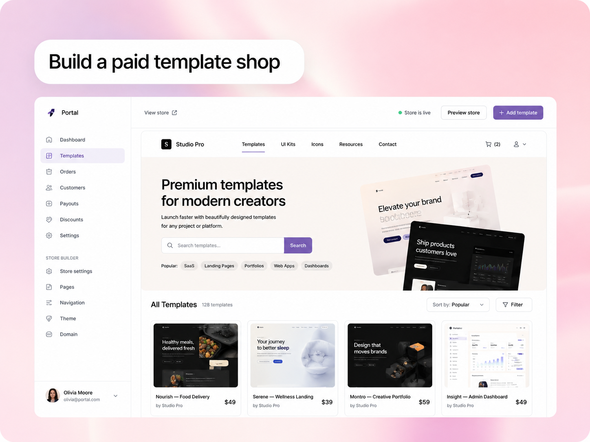
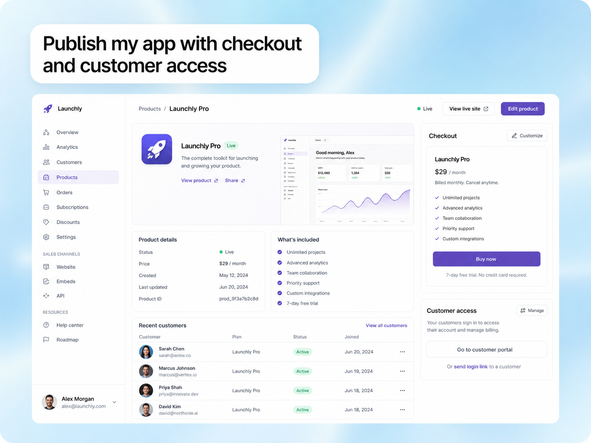
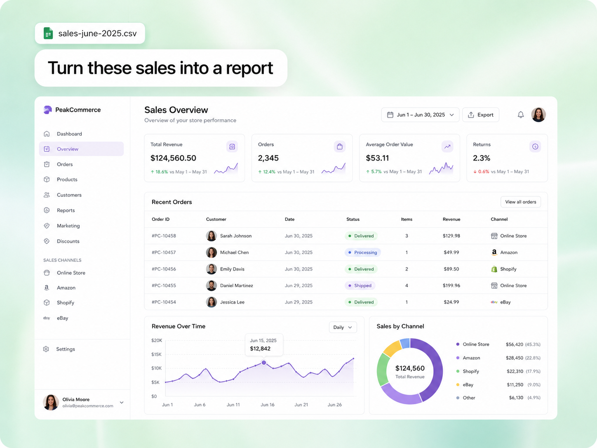

Build a storefront, template shop, landing, or digital product from one workspace.
Corya garde ton app, ta boutique, tes ventes et tes chiffres au même endroit — le cœur du produit, sans couches inutiles.
Open workspace
Build a storefront, template shop, landing, or digital product from one workspace.

Sell with checkout, customer access, subscriptions, and product delivery already connected.

Measure revenue, orders, customers, and channels without rebuilding another dashboard.
Les produits digitaux sont construits en morceaux. Tu crées ton site quelque part, tu vends ailleurs, tu lis tes revenus dans un autre outil, puis tu essaies de comprendre ce qui s’est passé.
Corya réunit ces morceaux dans un seul espace : construire le produit, publier l’offre, encaisser, suivre les clients et lire les chiffres sans perdre le fil.
Sites, apps, landings et boutiques restent attachés au produit que tu vends.
Pages, produits digitaux, paiement et accès client partent du même système.
Revenus, clients, ventes et marketing deviennent lisibles dans le dashboard.
Le produit, l’offre et les chiffres restent connectés dès le premier jour.
Crée ton site, ton app, ta boutique et tes pages de vente dans un même espace, sans reconstruire ton produit dans plusieurs outils.
Start buildingOrganise les templates, les versions, les accès clients et les tâches produit avec une vue claire sur ce qui doit être publié ensuite.
Open storefrontPartage les accès, livre les produits, garde les fichiers et les actions sensibles dans un environnement propre, traçable et contrôlé.
View dashboardTrois blocs simples : créer le produit, publier l’offre, comprendre les chiffres.
Placeholder pour une preview du builder, des prompts et des composants.
Placeholder pour les pages de vente, checkout et accès client.
Placeholder pour analytics, revenus, clients et cohortes.
Les cartes ci-dessous sont des espaces de témoignages et cas clients à remplir ensuite.
Placeholder pour un retour utilisateur court.
Placeholder pour un cas client orienté ventes.
Placeholder plus long pour expliquer comment Corya remplace plusieurs outils : builder, boutique, paiements, analytics et relance client.
Placeholder pour un témoignage sur le dashboard.
Les réponses rapides avant de rentrer dans le produit.
Oui. Corya est pensé pour garder le produit, la boutique, les paiements et le dashboard dans un même espace.
Oui. Les templates seront pensés comme des points de départ très design, pas comme des pages génériques.
Oui. Le dashboard Corya centralise les ventes, volumes, balances, clients et performances marketing.
L’objectif est de permettre de démarrer gratuitement, puis de débloquer plus de puissance quand le produit grandit.
Construis le cœur de ton produit, publie ton offre et garde les chiffres sous contrôle.
Open Corya